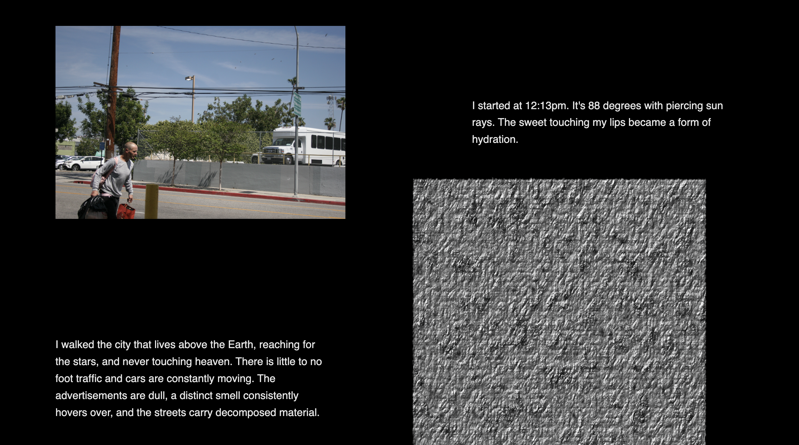

To Live and Die in LA
Inspired by Megalopolis: Contemporary Cultural Sensibilites (1992) by Celeste Olalquiague, this web narrative project depicts a blog post by a documentarian named John Shmuck. The narrative consists of a series of photos John took throughout his day in Los Angeles. Later that evening, John reconciles with his thoughts on his uber ride home, laying them all out in his post. Combining street photography, audio recordings, digital objects, music, p5.js sketches, and text, the narrative explores the ontology of urban life and decay. This project is featured in the Entangle: Networks of Becoming (2026) exhibition on New Art City.
